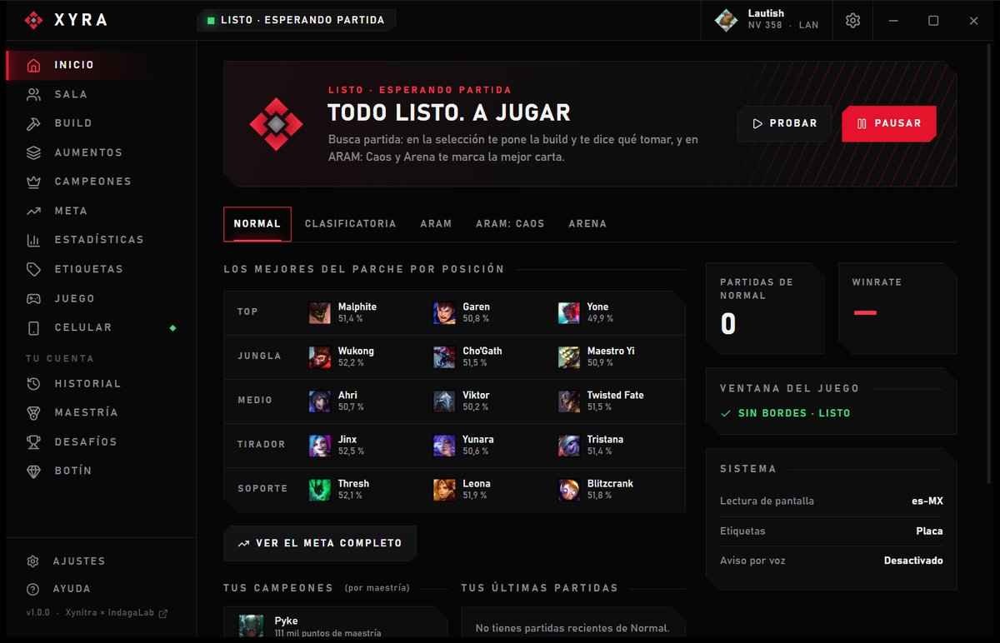
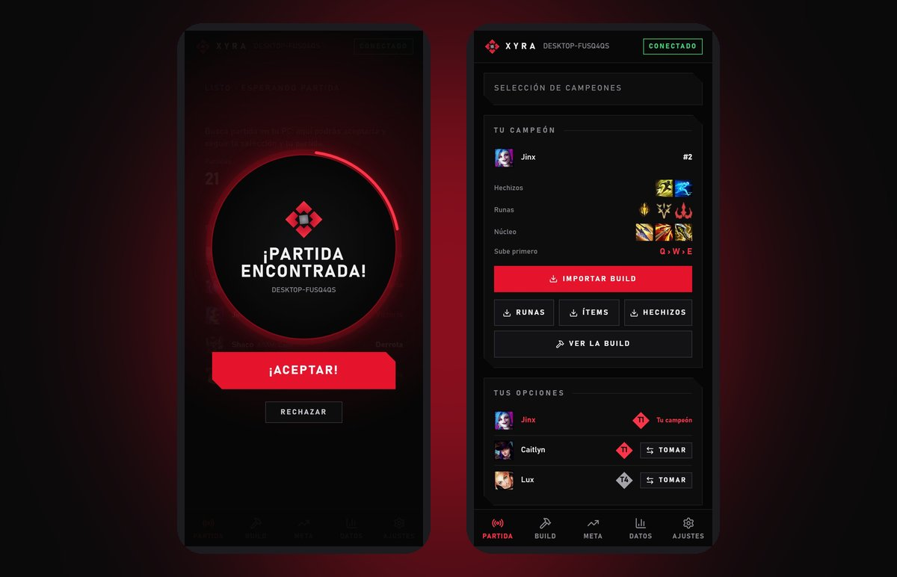
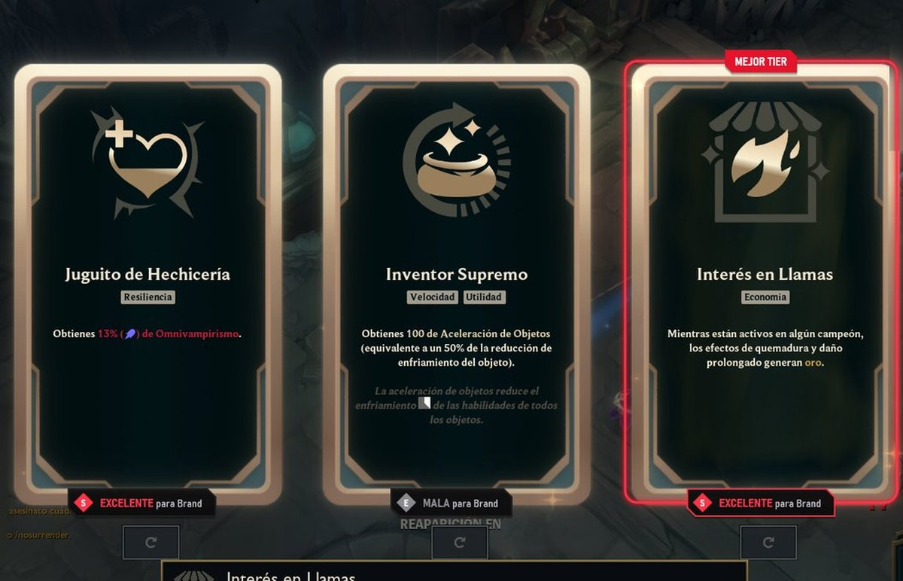
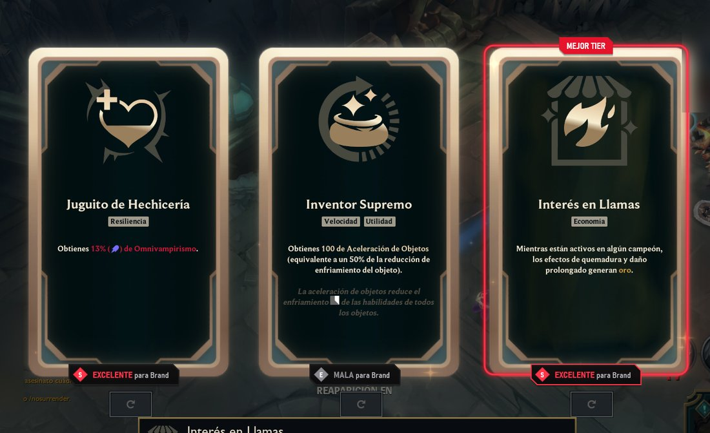
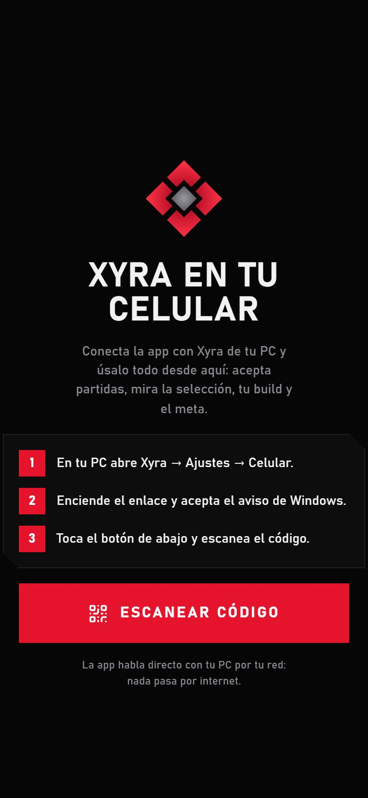
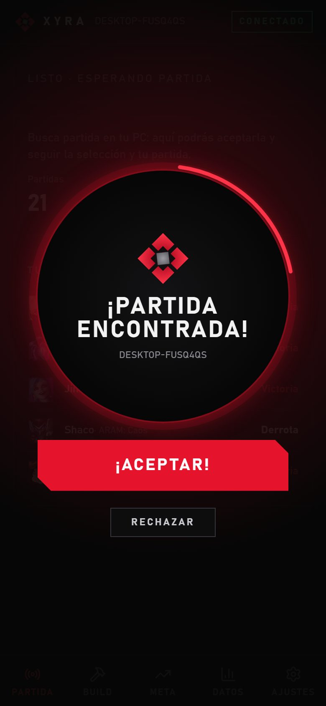
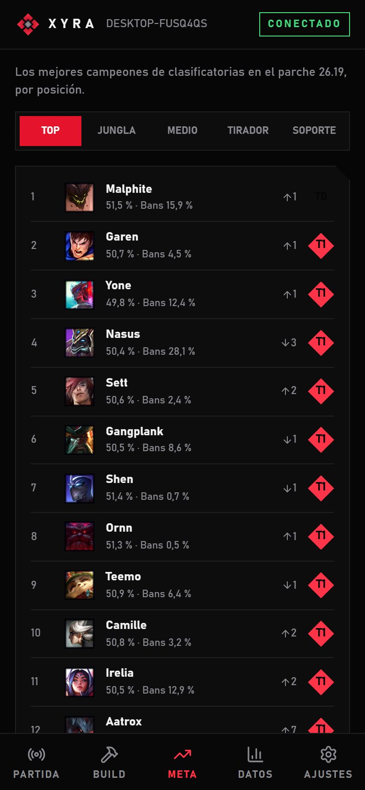
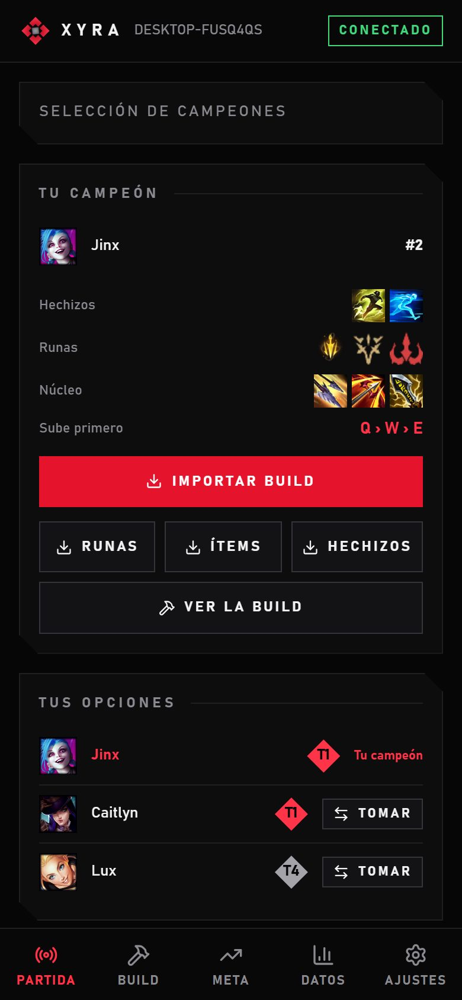
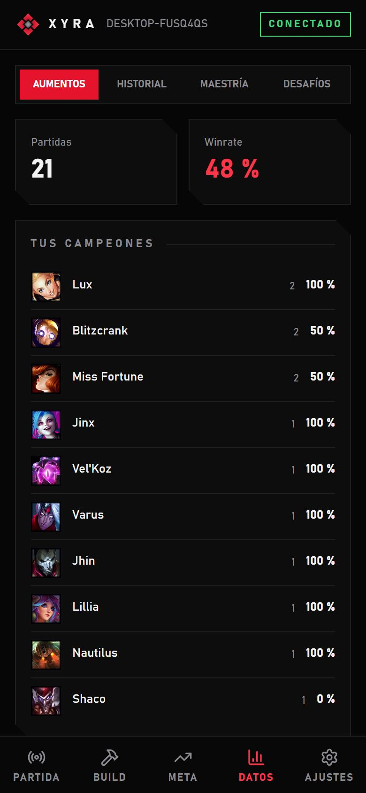
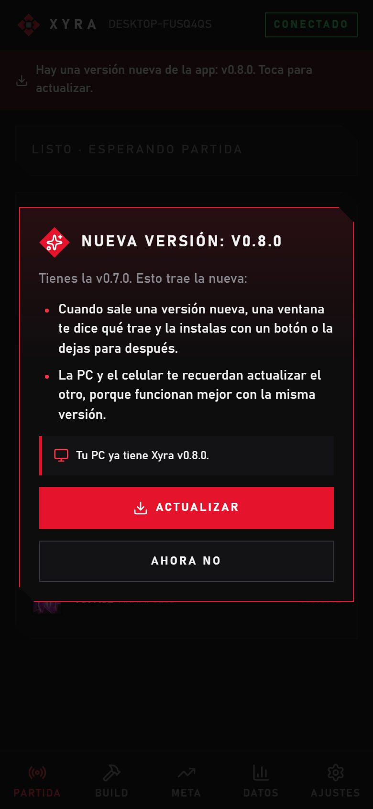

Etiquetas en vivo
Cada carta muestra qué tan buena es para tu campeón. La mejor queda marcada y las malas te sugieren cambiarlas. Si quieres, te lo dice en voz alta.
Companion para League of Legends
Elige campeón y Xyra te pone runas, hechizos e ítems de OP.GG al instante, te sugiere counters en normales y clasificatorias, y en ARAM: Caos y Arena marca la mejor carta de aumento para tu campeón en el momento en que sale.
GratisSin anunciosCódigo abierto



Cómo funciona
No tienes que abrir nada: Xyra se entera solo de cuándo estás en partida y con qué campeón.
Sabe al instante si estás en la selección o en partida, y con qué campeón.
Con el reconocimiento de texto que trae Windows, solo con el juego al frente.
Compara cada aumento con las estadísticas de OP.GG para tu campeón.
Dibuja la etiqueta encima de la carta, en una capa que deja pasar tus clics.
Pruébalo
Cinco estilos para que las marcas combinen con cómo juegas. Toca uno para verlo sobre las cartas.

Qué hace
Vive en la bandeja del sistema y solo trabaja durante tus partidas.
Cada carta muestra qué tan buena es para tu campeón. La mejor queda marcada y las malas te sugieren cambiarlas. Si quieres, te lo dice en voz alta.
Runas, hechizos y set de ítems de OP.GG en tu cliente. Si quieres, se ponen solos al elegir campeón, cada hechizo en la tecla que ya usas.
Tus opciones de la banca, la mejor primero, y un botón para tomar cualquiera; debajo, todos los demás. En la Grieta, los de tu posición y el counter de tu rival. Ordena por tier, por tu maestría o por lo que más juegas.
Te avisa cuando encuentras partida, aunque tengas la app cerrada, y la aceptas desde el aviso. También creas la sala, invitas a tus amigos, sigues la selección, importas la build y ves tu KDA en vivo. Se conecta con un QR.
Historial de todos los modos con KDA e ítems, cuánto te falta para subir la maestría de cada campeón y los desafíos que tienes a punto de subir.
Lee las notas oficiales y te marca qué campeones subieron o bajaron, empezando por los tuyos, con el motivo que da Riot.
Inicio por Normal, Clasificatoria, ARAM, ARAM: Caos y Arena: los mejores del parche, tu rango, las tier lists y tus partidas de ese modo.
Hecho en Rust, sin navegador mientras juegas. Un solo ícono abre Xyra y el LoL, y se actualiza con un botón.
En clasificatoria, cuánto LP te dio o te quitó cada partida y cómo va tu día. Es tu LP oficial: nada de calcular MMR.
Al tener campeón, Xyra le pone una de tus skins al azar o tu favorita, con cromas si quieres. Solo usa las que tienes.
Reclama recompensas olvidadas, abre lo que no necesita llave y forja llaves. Lo que no se puede deshacer te pide confirmación.
Tu perfil dice «Jugando a Xyra» con tu modo, campeón y KDA. Lo apagas o lo dejas más discreto cuando quieras.
Xyra en tu celular
Empareja la app para Android con un QR y usa Xyra desde el sofá o mientras esperas en la cola: acepta la partida, prepara tu build y mira el meta sin volver a la PC.






El celular habla directo con tu PC por tu Wi-Fi. Nada pasa por internet ni por servidores ajenos.
Cada celular recibe su propia llave. En la PC ves cuáles están conectados, qué pueden hacer y los desconectas con un botón.
Suena cuando encuentras partida aunque tengas la app cerrada, y la aceptas desde el aviso. La app también se actualiza sola.
Modos
Por qué Xyra
Ni en la app ni en el juego.
Instalas y listo: no te pide correo ni registro.
Una app nativa que no necesita otra plataforma debajo.
Cualquiera puede revisar qué hace, línea por línea.
Partidas y ajustes se guardan solo en tu computadora.
En español e inglés, con los nombres de tu cliente.
Así se ve
Toca una captura para verla en grande.
Juego limpio
Xyra hace lo mismo que las apps que Riot permite y nada más. Estas reglas son parte del proyecto.
Todos los detalles están en SECURITY.md.
Cómo se usa
Xyra hace casi todo solo; esto es lo que verás en cada momento.
Baja el instalador y ábrelo; no pide permisos de administrador. La primera vez, Xyra te muestra esta misma guía.
Pon el LoL en ventana Sin bordes para ver las etiquetas. Xyra lo hace por ti con el juego cerrado.
Crea tu sala e invita a tus amigos desde Sala, o busca partida como siempre. En Meta ves los mejores del parche.
Tu build y tu skin se ponen solas si lo activas en Juego. En ARAM, tus opciones de la banca con la mejor primero.
Toma la carta del marco rojo en ARAM: Caos y Arena. En Inicio y en el celular ves tu KDA y qué ítem sigue.
El LP de cada clasificatoria, tu historial, si te va mejor siguiendo a Xyra y tu botín, listos para revisar.
El instalador todavía no tiene firma digital, así que Windows puede mostrar "Windows protegió tu PC". Pulsa "Más información" y luego "Ejecutar de todas formas".
Novedades
Aquí van las tres últimas; todas las versiones y sus notas completas están en GitHub.
Preguntas
Sí, y de código abierto con licencia MIT. No tiene anuncios ni cuentas.
Xyra no lee ni modifica el juego, no simula teclas y no juega por ti: solo mira la pantalla, dibuja encima y habla con el cliente, como otras apps de estadísticas. Es un proyecto de la comunidad sin aprobación de Riot, así que úsalo bajo tu responsabilidad.
Builds, runas, hechizos y counters en normales, clasificatorias y ARAM. Las etiquetas sobre las cartas, en ARAM: Caos y Arena.
En pantalla completa exclusiva Windows no deja dibujar nada encima del juego. Xyra puede ponerlo por ti y mantenerlo.
No. Mientras no juegas se queda quieto en la bandeja, y durante la partida solo lee la zona de las cartas cuando el juego está al frente.
Sí, pueden convivir. Si las dos importan runas solas, deja esa opción activa en una sola, y si tienes todas tus páginas de runas ocupadas, libera una para que Xyra tenga la suya.
Instala la app para Android, abre Xyra en tu PC y ve a Ajustes → Celular. Enciende el enlace, acepta el aviso de Windows y escanea el código con la app. Solo se hace una vez.
No: el celular tiene que estar en la misma red Wi-Fi que tu PC. Así nada pasa por internet.
Solo quien escanee tu código. Cada celular recibe su propia llave: en Ajustes → Celular ves cuáles están conectados, qué pueden hacer y los desconectas con un botón. También puedes cambiar el código cuando quieras.
No. Desde el celular aceptas la partida, importas la build, cambias ajustes y ves información; elegir campeón y jugar sigue siendo cosa tuya en la PC.
Sí. Con "Avisarme de la partida" encendido en los ajustes de la app, suena cuando encuentras partida y puedes aceptarla desde el aviso. Mientras espera verás una notificación fija de Xyra.
Algunos módems no dejan pasar al celular hasta que la PC habla en la red. Xyra se presenta solo mientras el enlace está encendido: deja Xyra abierto en la PC unos segundos y el celular vuelve a intentar solo. Si no, la app te muestra qué revisar.
De las notas oficiales del parche. Xyra compara los números de cada cambio para marcarlo como buff, nerf o ajuste, y te muestra el motivo de Riot.
Por ahora solo para Android 7 o superior.
Para marcar tu red de casa como privada y abrir solo el puerto de Xyra en redes privadas. Sin eso, Windows no deja entrar al celular.
No. La skin solo se pone si eliges «Aleatoria» o «Tu favorita» en Juego, y siempre una de las tuyas. En Botín nada pasa hasta que tocas un botón, y lo que no se puede deshacer te pide confirmación. Nunca toca fragmentos de skin, gestos ni eternos.
En Ajustes → General → Discord activa «Mostrar en Discord lo que juegas». Discord tiene que estar abierto en tu PC.
Cuando sale una versión nueva, Xyra te muestra qué trae y la instalas con un botón o la dejas para después. La app del celular hace lo mismo y te recuerda actualizar también la otra, porque la PC y el celular van mejor con la misma versión. Nunca pierdes tus ajustes ni tus partidas.
Windows 10 y 11 · Android 7 o superior